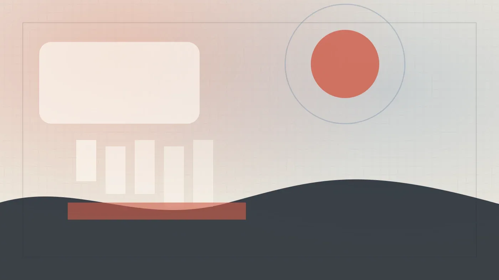

РоссияКод
Новая редакция закона об ИИ: поддержка вместо запретов
Правительственная комиссия одобрила новую версию закона об ИИ. Разбираем, что изменилось для разработчиков.
Habr AI
22 июн.Российский рынок ИИ: государственная политика, отечественные модели, кейсы компаний и академические достижения.
209 материалов
Правительственная комиссия одобрила новую версию закона об ИИ. Разбираем, что изменилось для разработчиков.
Власти смягчили регулирование ИИ: убрали запрет на зарубежные нейросети и установили переходный период до 2032 года.

Треть специалистов по ИБ уже используют ИИ: результаты опроса 170 профессионалов

DeepSeek-R1 на ARM-сервере с A100: как обошли NUMA и собрали локальную LLM

Как работает долговременная память ИИ: извлечение фактов, веса, забывание и проблемы с персональными данными
Сокращение найма джунов в ИТ на Западе: роль ИИ и токенмаксинг как новый тренд
Опрос Weeek: 69% россиян применяют ИИ на работе ежедневно
VK Cloud запустил Managed Kubernetes на Bare Metal: ИИ-нагрузки ускорились на 15%
Каждый третий работник в России уже использует ИИ — но работодатели этого официально не требуют
Российский разработчик ИИ-агентов «Делов» выбрал платформу «Сфера» для контроля разработки и безопасности.

Исследование Selectel: 25% российских компаний уже используют ИИ в облаке, а open-source модели становятся главным трендом.
Как подключить YandexGPT к ИИ-агентам: инструкция для OpenCode, Pi, Hermes и Claude Code
Девелоперам предложили готовый маршрут внедрения ИИ — от аудита до пилота за год
Три opensource-фреймворка для локального развёртывания ИИ-агентов: Gaia от AMD, Ailoy на Rust и Opperator с терминальным интерфейсом.
Треть россиян за ИИ-блогеров, треть против — и только 28% уверены, что отличат их от людей
175 школьников сдали норматив по ИИ — 124 получили золотые значки с бонусом к ЕГЭ
Как превратить историю платежей в структурированную базу знаний для LLM — решение Sber ИИ Lab

ИИ-агент в «Яндекс Командировках» сам подберёт рейс и отель по вашим условиям

ИИ-агент в «Яндекс Командировках» сам бронирует билеты и отели по одному текстовому запросу

СУБД Platform V Pangolin DB от «СберТеха» получила поддержку векторного поиска для ИИ-задач.

«Первый Бит» запустил ИИ-платформу с готовыми агентами и конструктором для бизнеса

Рекорд потерь и рекорд находок: что изменилось в поиске питомцев в России за год

Как зашить архитектурные правила в CI, чтобы Claude Code перестал склеивать всё со всем

Tracer, ClickHouse и ReAct: как VK Cloud Conf 2026 анонсировала инструмент для отладки с ИИ-агентами

Как собрать управляемый Deep Research без подписки за $100 — на open-source и бесплатных API

ИИ написал код и тесты — мутационное тестирование нашло дыры там, где покрытие казалось отличным

Почему зелёный дашборд adoption ничего не доказывает — и что спросить у себя вместо него
Детекторы ИИ ошибаются в половине случаев — как студентам защитить свои дипломы
Почему промпт под Opus 4.8 ломает Fable 5 — и как выстроить схему для трёх моделей сразу
Студенты из Петербурга попали на AAAI с 30 000 заявок — и случайно сели за стол к учёному с 40 000 цитирований